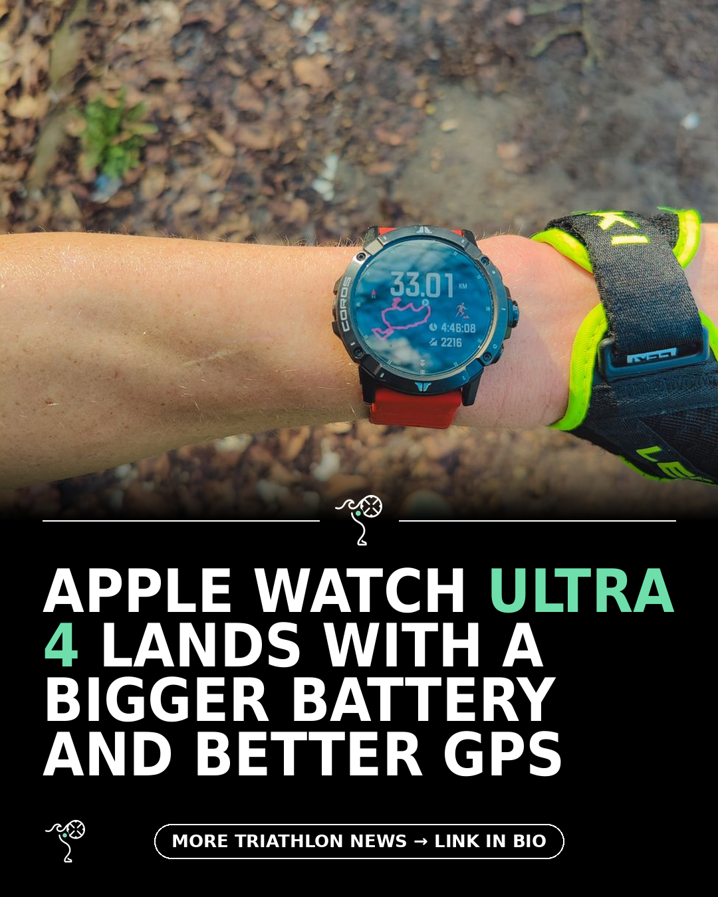

Triathlon News Daily
Friday, 25 September 2026 · generated automatically

Today's stories
- Apple Watch Ultra 4 vs Series 12: every difference testedDC Rainmaker
- Martyn Brunt's race campervan finally dies after 16 years220 Triathlon
- High-protein recipes that go beyond eggs and chicken220 Triathlon
- Paul Eaglestone on the free speed hiding in your swim strokeBlog - A Triathlete's Diary
- Elevate your training with the personalised wearable that tells you what to do next – not just what happened220 Triathlon